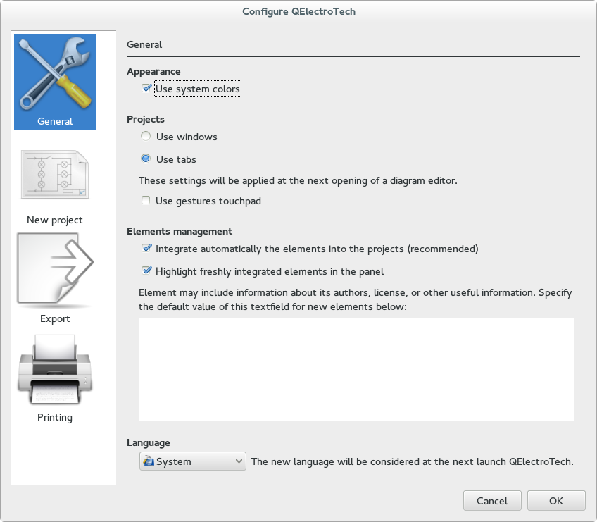
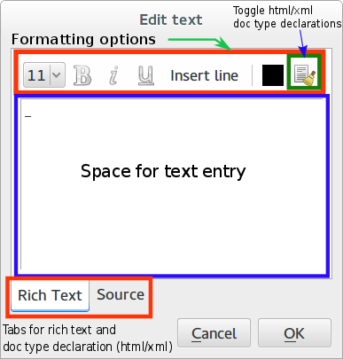
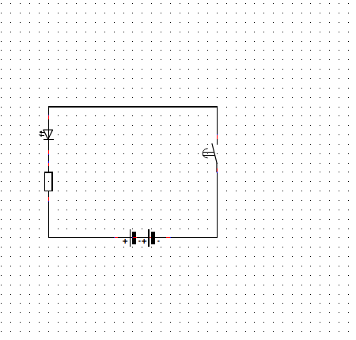

Welcome to QElectroTech! 0.4 finale
This is not just a documentation but a complete working guide!
1. Introduction
1.1 About QElectroTech
QElectroTech is an application to create primarily, electrical, electronics, automation and control circuits. However, QElectroTech can be exploited to create mechanical objects to illustrate processes, instrumentation drawings among various creative possibilities. QElectroTech is a good professional quality drafting application for various drawings that form a project.
QElectroTech has a large collection of standard and custom symbols, referred to as elements, that describe most of the commonly used components in electrical, hydraulic, pneumatic, computer systems. These elements can be selected drag dropped with mouse on to a diagram editor and connected with lines to represent or describe a system. A large number of such diagrams can be drafted under a project. QElectroTech is easy to use professional software that is free to download, install, use and develop.
QElectroTech also consists of an inbuilt element editor that permits creation of newer elements that do not exist in the collection. Elements in the QET collection are not editable i.e 'read only'. But, once the element is drag dropped into a diagram, it is automatically added to “imported” collection in a duplicate copy. This copy of the element will be available for editing to effect suitable changes to create customized symbols.
The finished diagrams can be exported to various formats like 'dxf', 'pdf', 'jpg', 'png' etc.,. QElectroTech is available in many international languages. It is also possible to use multiple languages in the same drawing / project.
The elements in QElectoTech are saved in a xml format. The projects and diagrams can be saved as '*.qet' format for further editing.
QElectroTech is distributed as a Free Software released under the GNU / GPL license. As on the date, a stable version 0.4 is released for systems operating on MS Windows, GNU / Linux and MacOS. The present English documentation is developed for 0.4 version. However, this document can serve as a complete documentation for previous versions 0.3 as well.
1.2 Installation
You can download the latest version of QElectroTech from http://qelectrotech.org/download.html.
For GNU/Linux systems, source files can be downloaded and configured. Ready made packages for some Linux distros are also available for download.
For MS Windows systems, ready to use executable installation files (.exe) are available for download which are packed in a `zip’ folder.
- For installation in Fedora use:
sudo yum -y install qelectrotech
- For installation in debian use:
sudo apt-get install qelectrotech
For a nightly build devel version -
deb http://debian.qelectrotech.org/qet/debian/ stable main for stable Debian aka Jessie with Qt4 (Qt5 for nightly build devel version)
deb http://debian.qelectrotech.org/qet/debian/ unstable main for Qt5, nightly build devel version
1.4 About Using QElectroTech libraries
In the case of using all or part of the QElectroTech library for purposes other than to create wiring diagrams, you must abide by the terms of the Creative Commons-by license:
This work is licensed under the terms of the Creative License Commons Attribution 3.0. For a copy of the license please visit the website: http://creativecommons.org/licenses/by/3.0/
or send a letter to :
Creative Commons
171 Second Street, Suite 300
San Francisco
California, 94105, USA.
1.5 QElectroTech GUI application
1.5.1 Description of the Drawing window
1.5.2 Title bar
The title bar carries the name “QElectroTech” and has the options to “Close”, “Minimize” or “Maximize” the application. The options can vary in each installation corresponding to the theme settings. The snapshots provided in this documentation are for GNOME in Fedora 20 with default Adwaita theme. Here you can see only a “Close” option.
1.5.3 Main Menu bar
It is a standard menu bar, which allows you to access all the features of the application such as “File”, “Edit”, “Project”, “Display”, “Settings”, “Windows” and “Help”. Each of the tool button further contains a number of options to initiate an action. A brief description of each such option can be read from the help or information tool bar, located to the bottom left corner of the QElectroTech window by hovering over the option with the cursor.
1.5.6 Control tabs
Two tabs are provided to the bottom left corner of the QElectroTech application main window, to switch between the elements panel and the Undo panel. Elements panel is default view in QElectroTech. Undo tab records each change to a diagram in the chronological order. The user, can at any point of time may wish to go back to any previous point in the diagram by selecting it in the undo tab. Each change that is effected by user’s action in the diagram are recorded vertically in the Undo window. Select a point in the history where he/she wishes to return to and switch back the tab to “elements panel”. The changes that were effected after the event will be undone. After the undone action, the user will find that the actions that were undone are highlighted in light pink color, under appropriate category in the elements panel. These actions are marked internally by QElectroTech as unused in the project. The tabs can be turned off or on from the tool bar settings and selecting the display. Unchecking the options will turn off the corresponding views tab or tools in the main window.
However, it should be understood that only actions that are related to drawing can be undone such as adding or deleting of elements, conductors etc.,.
1.5.7 Help bar
The help bar is the space below the control tabs, the bottom left most corner of the main window. It is very useful for beginners of QElectroTech in the way that it gives information about the field that is pointed by the cursor. A user can learn about a field by simply pointing it with the mouse and looking at the help bar.
1.5.8 Drawing and Project tabs
The drawing or diagram can be given a name in the diagram properties. Either click the diagram properties from the tool bar or double click the drawing tab. There are many other options that can be set in the diagram properties window. Once a name is given to the drawing, it gets displayed in the drawing tab.
The project is named by “Project XXXX” where XXXX is the name of the file (*.qet) as which it is saved. In QElectroTech each project is a different file. Individual drawings forming part of the project are displayed when a project is selected. It is possible to work with many projects in the same window.
By default, QElectroTech displays the project name as “untitled project” in the project title tab and “Untitled” in the diagram title tab. The user can save the project by giving it a name of his/her choice as a file. The project title tab displays the name of the project, which is saved as “*.qet” file on the computer. There is an option to close the project, by clicking at the top right corner of the project title bar. A new project can be opened in the same window, which opens as a new tab in the project title. User can switch from one project to the other by left clicking the tabs with the mouse or pressing control + tab key from keyboard. The project title can be changed from the main menu bar Project, then selecting the Project Properties and entering a name for the project in the project title field.
1.5.9 Workspace
The workspace is analogous to the drawing chart. The work space is directly affected by the template applied. By default, work space is divided into cells rows from `A’ to `H’ and columns `1’ to `17’. The rows and columns can be modified by adding or deleting rows and columns from the diagram properties window. The default size of each column is 60 pixels and that of each row is 80 pixels, both of them can be adjusted in the diagram properties. Workspace is the area where the diagram is prepared, by including elements, conductors, text and pictures. The title block section of the workspace contains information related to the drawing such as - `Author’, `date’, `Title’, `File’ and reference `Folio’ numbers.
2. Creating a New Project
A new project can be opened from the main menu bar by selecting File and clicking New or by clicking the shortcut icon from the tool bar.
Fig.7 Project properties window [For more description go to `Project properties`_]
A “name” for the project created can be given in the Project Title field of Project properties. Click Projects from main menu to access these options. The project title tab now displays the project name as Project "name" [modified]. The project should now be saved as a file file_name.qet, the project title tab then displays project "name". A project can have this “name” different from the name of the file as which it is saved. Alternatively, a project which acquires its name from the file name can be overwritten by this action. The Project properties window has several options to be set. Such options are applied to all subsequent drawings added to the project. The present drawing properties should be set from the Diagram properties option in the tool bar or by double left clicking the drawing tab. Project properties window is further explained under `Project properties`_.
3. Creating a new diagram
By default, QElectroTech opens an Untitled diagram under an Untitled project when a new project is created (refer Section.2). A new diagram can also be created by pressing Control + t keys from keyboard or by clicking the add a diagram button located rightmost on the diagram title bar or by selecting the add a diagram from the Project option on the main menu bar. The drawing name and other properties can be set by invoking Diagram properties button from the tool bar. The Diagram properties can also be launched from the menu bar Edit and selecting the Diagram properties or by pressing Control + L keys from the key board. The diagram properties window has options to assign a name to the diagram, author’s name, date, changing the dimensions of the work area by adjusting number and dimensions of rows and columns, or selecting a standard template for the drawing etc.,. There is a custom tab provided for user defined keys.
Fig.8 Diagram properties [For more description go to `Diagram properties`_]
The Diagram properties window is explained further in the section on `Diagram properties`_ to describe most of the features it houses.
4. Configuring QElectroTech
QElectroTech permits customizations through configure option. To open the “configure window” click Settings from the main menu bar and select Configure QElectroTech. The customizations can be effected to
- Configuring General window

Fig.9 Configuring General window
- General window has the following customizations permitted in QElectroTech:
- Appearance: (Default value is System colors)
- Checking the option for `Use system colors’ will make QElectroTech to pick up the same color profiles that are applied to the Operating System environment, like MS Windows or Debian Linux etc.,.
- Uncheking the option will make QElectroTech appear with a default appearance, which will be immune to the Operating System Environment color profiles.
- Projects: (Describes how projects appear in the main window, default value is Tabs.) These options require restarting the QElectroTech application to effect the changes.
- Tabs: Checking the option will make projects appear as tabs in the QElectroTech window. Projects that are added subsequently will appear as tabs in the Project Title bar.
- Windows: Checking the option will make projects appear as individual windows with its own set of diagrams. Newer projects added subsequently will also behave as new windows. The Minimize, Restore and Close options for the windows appear to the right most on the “main menu bar”.
- Use gestures touchpad: Use the option for touchpad control of projects tabs in QElectroTech.
- Elements Management: (Default value is both options selected).
- Integrate automatically the elements in to the projects: The option is reponsible to automatically import the elements added to the drawing into the Imported elements under Embedded collection of the project in the elements panel. In QElectroTech, the elements that are provided with the installations (in QET Collection) are not editable. However, once they are imported to the Imported elements of the project, they are available for editing in the element’s editor. They can be modified and reused in the drawing. The choice is therefore recommended. Refer to the section on `Elements editor`_ to learn to use the elements editor. You may gain quick overview by watching the animation in `Fig.20`_ under `Section.10`_.
- Highlight freshly integrated elements in the panel: The choice will generate highlighting colors over the elements imported in the Imported elements.
- Yellow color flashes over the parent element and the element imported to the Imported elements at the time of importing.
- If the elements that are imported to the project under Imported elements are subsequently deleted from the drawing(s), then these elements will be permanently highlighted in light pink color indicating that they are unutilized in the project. The highlight is however only displayed under the project in the elements panel and will disappear if they included again in any of the drawings under the project.
- Language: (Default value is System ) QElectroTech comes with many languages and the default language can be selected here. The language option can be set from the combo box next to language settings. You can either choose a fixed language in the QElectroTech application by opting your choice or leave it to the System option. In which case, QElectroTech automatically starts with the Operating System Environment language preference. Changing the system language would automatically change (update) the language for QElectroTech application.
- New project
Fig.10 Configuring New Project - Diagram
(2.1) Diagram: Some of the workspace settings are provided here. The customizable options include:
- Diagram size:
- Number of columns and rows for the grid.
- Size of each column and row.
- The headers for the columns and rows can be turned on / off. Headers are the `A’, `B’, `C’ etc., for rows and `1’,`2’,`3’ etc., for columns.
- Option to fill gray color in the back ground.
- Information title block: The specific terms (fields) that are used here will be explained together with their use. The fields provided will be applied by default to all subsequent projects / diagrams as the case may be. The information title block comes with two tabs Main and Custom. The Custom tab is still under development and is not described here.
- Title provides the default name of the diagram that will open with each of the subsequent projects. Title name is usually given to describe the drawing for example, like a power generation system, distribution system etc.,
- Author provides field to enter the name (or a pseudo name) of the person creating the diagrams in the project.
- Date field has options to :
- Not specify a date for the drawings
- Apply today’s date i.e. the computer systems date will be applied to all subsequent diagrams. The value is dynamic changes with each passing day.
- To set a default date (fixed) to every subsequent drawing. The value is fixed and do not change.
- File name applies to the top right field (cell) in the drawing / diagram title block. The file name can be for example the name of the system in a project. A system can have its drawing spread over several drawing sheets and all carry the same system name i.e. file name.
- Folio name is an additional field to specify the drawing in a file. Folio names are usually provided to specify the current diagram in a sequence of files across which a file is named (system is specified). The field is by default set as %id/%total, which is a dynamic nomenclature. When a new diagram is added in the same project it is updated as “the number of the current drawing” / “total number of drawings created”.
Fig.11 Configuring New Project - Conductor
(2.2) Conductor: Conductor is basically the line that connects two elements in the drawing. The customization window has options to tweak conductor type and conductor appearance.
Conductor type: The options that are provided to customize the conductor type and its text appearance as:
Multiline: The optional default text that should appear with each conductor can be entered in the Text field. The size of the font can be specified in the adjacent Size field. On the otherhand, the text field can be made invisible by “Unchecking” the Visible option i.e. no text will be displayed across the conductors, when they are created. Note: The Show one text per folio potential option is still under development.
Angle of conductor labels: The option to set an angle to the text that appears together with each conductor created can be set here. The options are provided under two categories, namely -
- Vertical: The vertical option is to set the default angle to the text that appears in the vertical direction. The angle can be set in eight specified intervals with the graphic interaction tool. Click the green squares on the yellow circle to set the specified angle. Also, a finer control over the angle precision can be achieved upto two decimal places in the adjacent combo box in degrees, by keying the value from the key board. Clicking the up or down keys in the combo box increments or decrements the angle by one degree only.
- Horizontal: The horizontal option is to set the default angle to the text that appears in the horizontal direction. The angle can be set in eight specified intervals with the graphic interaction tool. Click the green squares on the yellow circle to set the specified angle. Also, a finer control over the angle precision can be achieved upto two decimal places in the adjacent combo box in degrees, by keying the value from the key board. Clicking the up or down keys in the combo box increments or decrements the angle by one degree only.
Single line: The single line formatting provision is strictly included for the electrical diagrams. The provision shortens the representation of conductor(s) between two or more elements by including added information over the conductors, to convey a more meaning. In a typical domestic AC circuits we use a phase, a ground and a neutral wire. A drawing for such a circuit will require adding three conductors running parallel between the elements. This may clutter drawing and an alternate way exists to specify that a single line shown in the drawings represents a phase, a neutral and a ground cable. This is possible by choosing the Single line radio button and checking out the options (default) ground, neutral and phase. The neutral option has additional option called PEN to specify that the neutral cable is a specific Protected Earth Neutral. It is therefore logical to have a requirement for PEN to be active, that both ground and neutral be checked out first. The following points will summarize operations under Single line.
- A conductor can be formatted as any one or a combination of ground, neutral and phase. The small conductor snippet is provided to generate a preview of the likely conductor appearance after effecting the options.
- Selecting both options ground and neutral will permit to specify whether the conductor is a PEN type or not.
- The phase option is additionally facilitated with a slider and a double spin box, to specify the number supply phases. Provision exists to set a maximum of three phases only.
- The number of phases can be specified either by selecting and dragging the slider bar or keying in direct value in the double spin box or also by clicking the up / down keys of the double spin box to increment or decrement value by 1 unit.
Conductor appearance: Options that are provided to customize conductor appearance are:
- Color: A default color can be specified for the conductor from the color selection box. Left click on the color setting box, and pick up a color either from the existing basic colors or define a custom color by using the color mixer options and select it in the pop up color window. Click Ok to apply the option or Cancel to exit without applying the changes.
- Style: Currently three styles are available to choose from, for the default conductor appearance. The option can be selected from the list box next to the Style: option.
Note
The text that appears for the conductors created can switch between horizontal or vertical by adjusting the conductors. Refer to section uuuuuuuuuu to learn how to adjust conductors.
See also
- PEN
- On the low voltage circuits, sometimes the earthing and neutral functions are combined in the same conductor of the supply cable; this is known as a PEN conductor. The PEN conductor is earthed at multiple locations along its length using separate conductors (earthing). The conductor will be branched at each consumer (in domestic supply it may be a house) as a “neutral” and “earth”. This kind of distribution of electrical power supply is called TN-C system. This PEN conductor will provide a return path for both operating conditions - a neutral current flow under normal operating conditions and for the earth fault current during the duration of a line to earth fault.
Fig.12 Configuring New Project - Reports folio
(2.3)
Reports Folio: A set of
parent and
child elements are provided in QET Collection along with two other special referencing elements in QElectroTech. The two special referencing elements are
Previous folio and
Next folio located in the tree
QET Collection –>
Electric –>
All-pole –>
Sheet referencing. Refer to section
uuuuuuu for more description on reports folio. The referencing index that these elements generate between different drawings with in a project or within the same drawing can be customized from
Label of report folio in the
Reports Folio tab. There are three keys f (the number of folio), l (line number), c (the column number), which are internally defined in QElectroTech. User can shuffle these keys to customize his/her default reference indexing.
% symbol should be used prefixed to these keys to replace the keys with corresponding numbers in the drawing. A short explanation to the set of
parent and
child elements is provided in
Cross References.
Fig.13 Folio elements in QET Collection
Fig.14 Configuring New Project - Cross references
(2.4) Cross References: The cross references tab is provided primarily to label coils and contacts in electrical diagrams. Often electrical diagrams for example, like motor starters and protection systems will have a number of contacts and coils located at various points and correct referencing the contacts for their actuating coils in the diagram is of prime importance. The referencing customizations can be effected from this Cross references tab for subsequent projects or drawings. The current version has incorporated only basic functionality of referencing. The complete functionality of these elements is currently in development stage.
Fig.15 Parent Child and Manual entry elements in QET Collection
- Export
Fig.16 Configuring New Project - Export
The drawings from QElectroTech can be exported to different formats. Currently it is possible to export the drawings from QElectroTech as svg (Scalable Vector Graphics), bmp (Bit map), dxf (Drawing eXchange Format), jpg (Joint Photographers’ Expert Group format) and png (Portable Network Graphics). The various configuring options provided in the export window are:
- Target directory: The default directory to which the drawings can be exported.
- Format: The exporting format to which the drawing can be saved into the default directory.
- Rendering options:
- Export the border: This option will cause the entire drawing to be exported.
- Export only elements: This option will export only the elements from the drawing. The connectors between the elements will be preserved. However the rest of the workspace is omitted.
- Draw the border: The option specifies that the rows and columns provided in the drawing area to be included in the exported graphic.
- Draw the inset: The option specifies that the drawing title block to be included in the exported graphic.
- Keep conductor colors: The option specifies that the conductors colors assigned during drawing to be preserved and included in the exported graphic.
- Draw the grid: The option specifies that the `dotted’ grid to be included in the exported graphic.
- Draw terminals: The option specifies that the terminals (red tail with blue square) also to be preserved and included in the exported graphic.
Note
You can only choose one of these two options (a) or (b).
The default settings are Export the border, Draw the border, Draw the inset and Keep conductors colors only. Other options are left for the user to choose.
- Printing
Fig.17 Configuring New Project - Printing
The printing options are similar to the export options. Refer to the description for Export. The default values are Draw the border, Draw the inset and Keep conductors colors only. Other options are left for the user to choose.
5. Working with elements
QElectroTech has a number of elements listed as a tree under QET Collection in the left pane of main window. The collection of elements (shown highlighted in yellow square in Fig.1) is organized under relevant categories (folders). Users can click on the + symbol located left to the category to surf the elements or more categories under its tree. Alternatively an element can be searched quickly using Filter field, refer to filter. Each element can be selected using left mouse click and drag dropped on to the work area to include it in a diagram. The elements can be positioned any where in the work area. Some of the tools in the tool bar apply to elements such as cut, copy, paste, delete, rotate, element properties and select tools. Refer to  from tool bar.
Some of the operations possible with elements:
from tool bar.
Some of the operations possible with elements:
- Cut and Paste
- Elements can be cut paste by using the `scissors’ icon and `Paste’ icon from the the tool bar.
- Standard keyboard shortcuts like Control+x will also cut the element and Control+v will paste the element.
- Restrict the cut and paste functions within the same project. The elements would suffer data loss if the operations are effected over more than one project.
- Copy
- Elements can be copied by clicking the “Copy” icon from the tool bar or using Control+c from the keyboard. Copied elements can be pasted in the same drawing or another drawing of the same Project. Pasting into a new project may cause loss of data.
- Always use add an element (drag dropping into drawing) for new projects.
- Delete
- Added elements can be deleted by selecting the element with a left mouse click and pressing either Delete key from keyboard or clicking the delete tool in the tool bar.
- It is possible to Delete more than one elements at a time by selecting them and applying delete option. Refer to Selection properties to know how to select more than one element.
Fig.18 Rotating element (in steps of 90o)
- Rotating
- Rotation of elements can be performed by selecting the element in the work area with left mouse click and pressing space key from key board.
- Elements can be rotated in quantum steps of 90o (degrees).
- Rotate option in the tool bar turns active upon selecting at least one element in work area, which can be clicked to orient the selected element(s) to the required rotation.
- A number of elements can be selected together by holding control key from key board and left clicking required number of elements in the work area. Once the required elements are selected (evident from light gray box enclosing each selected element), rotation operation can now be performed on all the selected elements together as described earlier. Some elements like for example, a horizontal ammeter that cannot be rotated for obvious reasons.
Fig.19 Rotating more than one element (with and without text selected in steps of 90o)
- Selection properties
- Clicking the `Selection properties’ tool will pop open a properties window for the selected element.
- At a time more than one element can be selected either by holding Control key from keyboard and selecting each element by left clicking it with mouse or by clicking a point in the workspace, holding it and dragging a selection square encompassing the elements to be selected.
- When more than one element is selected, the selection properties window will have no options. Or in otherwords the software will not permit defining properties for a collection of elements simultaneously. It has to be done element by element.
Fig.20 Illustration of selecting more than one element with mouse
5.1 Folio Report
Folio report is included in the QET Collection –> Electric –> All-pole –> Sheet referencing in the collection of QET Elements. The element performs the referencing roles in the drawings. Refer to the section Reports folio .
6. Working with Text Fields
6.1 Inserting text field
Add a Text field tool is provided in the tool bar of the main window. To add a text field into the work space
- Click the Add a Text field tool and click at a point in the work space, where the text field should be added.
The text field by default appears as an underscore and it can be either used in association with an element or as an additional field inserted in the work space.
Some elements are provided with a text field at each of their terminals and / or one for the entire element. Additional text fields can be added any where in the work space by the procedure described earlier. The text field can be edited in the work space by
- Double left clicking the text field with the mouse and keying in text from keyboard.
- To exit editing, click any where else in the workspace. The text field supports multi-line entries and a few formatting options.
6.2 Orientation of the text field in workspace
All the text fields are horizontally oriented in the work space by default but, they can be oriented in any direction. The text field can be re-oriented by rotating it as described below:
- Select the text field by left clicking it with the mouse.
- Rotate it with the Rotate tool from the tool bar - refer to section on rotating elements. Alternatively the element can be rotated in quantum steps of 90o by pressing the space bar from the keyboard.
- The text field has special rotation attribute that it can be rotated precisely upto two decimal places of a degree.
- Select the text field and press control + space keys from keyboard to pop open a GUI window to rotate the text field in any direction.
- The GUI window facilitates rotation in quantum steps of 45o degrees by clicking the green squares on the yellow circle.
- A double spin box is also provided to manually enter an angle of orientation upto two decimal places. The double spin box can also be interacted with a left mouse, by clicking the up or down arrow keys, to increment or decrement the angles in steps of 1 degree correspondingly with each click.
Fig.21 Rotate text with orientation pop up window (The text selected (top right corner) is rotated by -25.75o degrees)
6.3 Moving and editing text field in work place
- Text field can be moved any where in the workspace by
- Selecting it with a left mouse click and holding it and drag dropping the text to a new position.
- Text fields that are associated with the elements require control key to be pressed from the keyboard to permit moving its text field along with the earlier described procedure.
Moving an element’s text field produces a blue colored highlight over the element during relocation as shown in the Fig.22. This feature of QElectroTech helps user to perform such actions in a large diagram and still conspicuously keep track of its parent element.
Fig.22 Illustration the step (b), repositioning an element’s text label
- Text fields that are not associated with elements have an additional editing options -
- Select the text field with a left mouse click and use the keyboard short cut Control + e or from the main menu bar, select Edit --> Edit the text field. A simple text editor window opens up to facilitate some basic text formatting features such as increasing the font size, font color, applying bold / italics / underlining formats to texts and inserting a hyperlink.
Note
The hyperlink is preserved only for the diagrams that are exported to `pdf’ format. For other picture exporting formats the hyperlink appears as a underlined text.

Fig.23 Edit text window for the text field in workspace This is a WYSIWYG (What You See Is What You Get) editor.
7. Working with connectors
Elements have terminals, a conductor generating extension to elements to connect them with other elements or connectors. Making connections between terminals can be summarized as follows:
- Position the cursor on the element connector or terminal you want to connect; you will see that a blue dot appearing on the terminals you want to join.
- Left click the blue dot and hold and drag the pointer to the connector or terminal to join the other element you want to connect. If a green dot appears on the target terminals, it means that the conductor path between them is complete. A red dot means a ``forbidden connection”.
- Release the left mouse button and the conductor will be completed. The conductor assumes a path between the two elements. However, the connectors can be edited by selecting the conductor with a left mouse click and dragging the green squares on it. Refer to Section 8 for more operations with conductors.
Fig.24 Animated graphic showing making of conductor between two elements
8. Resizing conductors (connectors)
8.1 Adjusting conductors by moving elements
- Select an element in a circuit by left clicking it and hold it in the work space.
- Drag the selected element in the circuit, the connectors linking the element to the rest of the circuit also moves.
Fig.25 Adjusting conductors by repositioning elements
8.2 Adjusting conductors with handles
- Select a connector with a left mouse click. The segment of the selected connector between two elements turns red, indicating that the conductor is selected.
- Position the cursor over the selected connector; you will find thick green colored squares appear over this segment, one each in a bend.
- The connector can now be adjusted as per the users demands by left clicking these thick little squares and holding and dragging to a new position. The connector changes its path during this action.
- To reset the altered path, left click the short cut icon `Reset conductors’ provided in the tool bar with the connector selected (highlighted red). This action will undo all the earlier changes effected to the connector.

Fig.26 Animation showing adjusting conductors with handles and reset tool
8.3 Adding text to connectors
Connectors are provided with text fields, which can be configured from the new project option and conductor tab. Additional text fields can be inserted at desired locations. Text fields for connectors have the same behavior as the text fields for elements discussed under creating a new diagram. Double left click a connector text field and enter the text. The text can orient horizontally or vertically depending on the section of the connector where the test field is provided. The text fields can be rotated and re-positioned as required. Refer section on configure conductor for a complete list of configuration options.
8.4 Connector properties window
A connector’s properties window can be activated by double left clicking it. The connector and its text field properties can be set from this window. Only multiline connectors have text fields. Selecting the single line radio button deactivates the text field. The single line option has further options to format the connector as an earth, phase or a neutral conductor or a combination of any. Selecting the neutral option further facilitates formatting the conductor as Protective Earth Neutral (PEN). Number of phases can also be set upto 3 by selecting the phase radio button and using the slider or keying a value into the double spin field. Color and styles to a connector can be applied irrespective of other choices. Refer section on configure conductor.
9. Element’s editor
9.1 Creating a new element
Elements in QElectroTech exist in “xml” format. The QET Collection of elements provided with default QElectroTech installation parameters, are saved in a invisible folder $HOME/.qet/elements. User may however save his/her elements anywhere on the disk. But, QElectroTech detects its elements only from this default folder whenever Reload is executed from the Element's panel tool bar.
Elements provided in the QET collection are read only and cannot be edited. However, they can be added to “User collection” and subsequently edited and saved. The animation graphic presented at Figuuuuu of `Section.10`_ will explain the steps in creating a new element.
- Select the ‘User collection’ with a left mouse click over it. Then elements can directly be created under it. However, it is a good practice to first create a `category’ under `User collection’.
- Left click the shortcut icon `New category’. Then `Add a new category’ wizard opens, which guides the user for subsequent actions.
- Enter a name to the new category (internal name); the field takes only small letters, numbers and `-‘, `_’ and `.’.
- Double left click the text field, enter a name that the category should display and hit `enter’ from keyboard. By default, the field shows `Name of the new category’ and language `en’ for English versions. Additional support languages can also be added by left clicking the `Add a line’ button. Now left click `OK’ button to add the category to user collection. This action can also be achieved by hitting `enter’ key from keyboard.
A new category is now added under `User collection’; its internal name is displayed in the tool tip and the name displayed is from the text entered in the text field in step 4.
- Select this category with left mouse click.
- Click on the shortcut icon on tool bar to create a `New element’.
- A `Create a new element’ wizard opens up, which guides the user to create an element. Select the category in which the new element created will be placed.
- Click `Next’ button.
Step 8 opens up a request for a file name for the element to be created.
- Enter a name for the element to be created. Naming convention is similar to that of the internal name for category explained earlier in section —-. Click `Next’ to continue the wizard.
- Select the text field and left double click on the default text displayed. The field will be editable now.
- Enter a name by which the element will be displayed under `User collection’. The text field accepts all valid keys. After entering a name, hit `Enter’ from keyboard. Hit `Enter’ key from keyboard one more time or click `Finish’ button to complete the wizard.
- The wizard now completes opening up `Element editor’ window. The element editor facilitates drawing of a new element or editing imported elements under `User collection’. The element editor has a plain drawing area with two thin red colored reference cross hairs. The cross hair is for reference and does not show up in the finished element sketch when saved.
9.2 Description of Element editor
9.2.1 Title bar:
The title bar has buttons that all standard windows are provided with.
9.2.2 Drawing area:
This is the dotted grid area over which the elements are drawn.
9.2.3 Undo & Parts:
By default the element’s parts is the active tab. It contains all the individual segments that make up an element in the chronological order. The `Active area’ segment is highlighted in this tab. Undo tab records each action made in the element editor and the user can visit any stage by selecting the corresponding entry in this tab.
9.2.4 Main menu:
Main menu has `File’, `Edit’, `Display’, `Settings’ and `Help’ icons.
- File: The file option has standard windows options for creating a new element, opening a saved `*.elmt’ file or `*.xml’ drawings, opening an element from `User collection’ or `imported collection’, saving the drawing to their respective locations and inter alia. `Reload’ options reloads the element drawing neglecting all the changes effected.
- Edit: `Edit’ has standard options like `cut’, `copy’, `paste’, `select all’, `undo’, `redo’ and `delete’. `Invert selection’ selects all geometry in the drawing area. It has analogy similar to shuffling a pack of playing cards. Options to set the author name and his license and adding language features to the drawing are also available.
- Display: This icon has the zoom in / zoom out options for the drawing.
- Settings: This has features to turn on or off panels or tabs that constitute the drawing editor, a full screen mode and configure QElectroTech options. Configuring QElectroTech will be described in a later section.
9.2.6 Active area:
Active area is the part of the element that is selected with a left mouse click. The active area data is displayed in the information panel and the segment will be highlighted in the `element parts’ of the editor.
9.2.7 Element:
Element is the completed drawing of a symbol, which is used to represent a component in a circuit drawing. Elements can be given names to describe them and saved either in a *.elmt or a *.xml format. An element should be provided with at least one terminal to facilitate its integration in a drawing. The element can also be saved to `User collection’ among others. Two types of text fields are possible to be added to an element to either describe it or its segments and terminals. The text fields are described in detail later under section ref{sub:drawingbar}. One text field is not editable when the element is saved and used in the QElectroTech drawing while the other has users text input feature.
9.2.8 Main tool bar:
The main The main tool bar is a collection of quickly accessible shortcuts to the features available in `Main menu’ group under `File’, `Edit’ and `Display’. tool bar is a collection of quickly accessible shortcuts to the features available in `Main menu’ group under `File’, `Edit’ and `Display’.
9.2.9 Drawing bar:
The drawing bar has the tools for constructing an element. The options include a cursor tool to permit selection of either individual segments of the drawing or a combination of these, including text and terminals. The drawing tools are each described below:
9.2.9.g Add text:
Select the `Add text’ icon with a left mouse click to activate the tool in the drawing bar. With the tool activated, use left mouse click to select a point in the `drawing area’. A text box with default font size and orientation appears at the point selected. You can re-size the geometry using the handles of its `active area’ or from its information panel. The add text field is used to label the element and its components. The text added with this tool cannot be edited while using the element in QElectroTech drawings.
Text tool and information:
`Add text’ tool permits fixed naming of the element and its parts at the time of its drawing. Add text appears as a text box with a default font size and orientation at the point selected. The dimensions of the text box can be altered either from the handles of its `active area’ or from the information panel. Drag and drop functions are possible and are similar to those described earlier for other tools. The information panel describes the text box position by a single point coordinate, font size, color as either `black’ or `white’, text to display and orientation. Text can be oriented in any direction possible from 0 to 359.99 textdegree. figurename~{15} shows the text added to rectangles filled with different colors.
9.2.9.h Add a text field:
Select the `Add a text field’ icon with a left mouse click to activate the tool in the drawing bar. With the tool activated, use left mouse click to select a point in the `drawing area’. A text box with default font size and orientation appears at the point selected. You can re-size the geometry using the handles of its `active area’ or from its information panel. The add text field is used to label the element and its components. A default `_’ is added to this text field to give an indication of the location of the field when the element is added in a QElectroTech drawing. This field accepts the users input in the QElectroTech drawing.
Text field and information:
Often `Add a text field’ tool is associated with elements or their parts at the time of its drawing. The text field appears as a text box with a default font size and orientation at the point selected. The dimensions of the text box can be altered either from the handles of its `active area’ or from the information panel. Drag and drop functions are possible and are similar to those described earlier for other tools. The information panel describes the text box position by a single point coordinate, font size, default text as `_’ and orientation of 0textdegree. Add a text field can be oriented in any direction possible from 0 to 359.99 textdegree. The figurename~{16} shows the Add a text field. This tool has an additional selection box named `Do not follow parent element rotations’. If this check box is selected, the field does not rotate even if the element to which it is associated is rotated in the QElectroTech drawing.
10. Sample tutorial - Creating a Globe Valve Element
The tutorial here explains the creation of a globe valve element. You may click on the animated graphic to zoom to understand the sequence of steps followed to create and import elements in diagrams. The graphic is provided with text to offer guidance to each action required in the stage.
Steps for creating and importing elements in QElectroTech (Right click the image and select view image to watch the animation in full screen)
11 Title block template editor
QElectroTech comes with five different templates to work with, namely - `A4_1’, `default’, `DIN_A4’, `double-logo’ and `single logo’. QElectroTech also permits custom template designing with user defined title block. In this section an introduction to the title block editor is presented. Also, a tutorial to design a referenced title block is included, to familiarize users with the behavior of the title block editor.
11.1 Opening title block editor